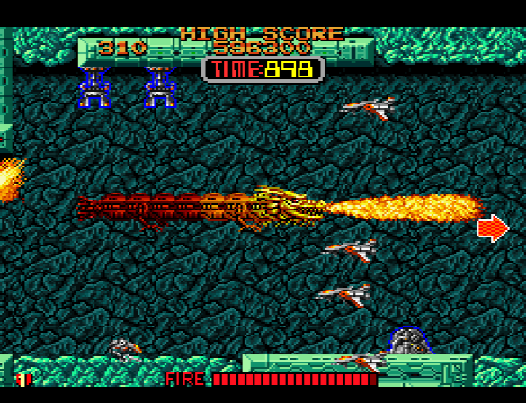
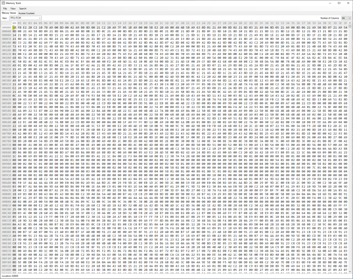
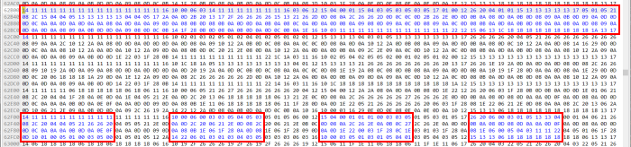
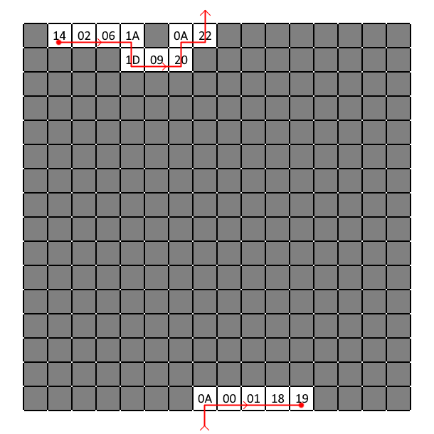
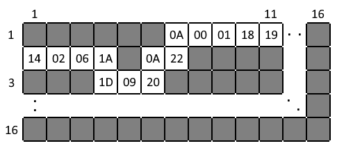
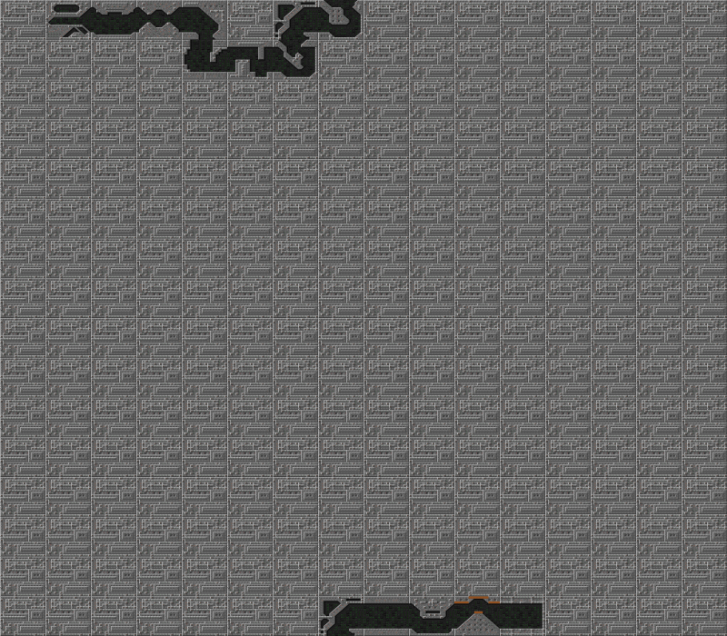

2022-02-24
Syvalion is a game about flying a golden dragon spaceship through various mazes... well, something like that, anyway!
The odd setting aside, it was recently discovered that it's possible to clip through walls and go out of bounds, which rekindled the interest in speedrunning the game.
With the ability of travelling through walls at certain angles and skipping over the ever-turning mazes, an interest in studying the map layouts grew. I was asked by PIRATEGHETTO about the possibility of pulling out the maps from the game data, so let's take a look under the hood of Syvalion!
How do we go about finding the map data? Whenever I look into a game I like to start out with finding some basic information first. This usually means searching the game's memory for things like player data (hp, position & speed...) and other general values (current stage, frame counter...). It's good for both possible later use and to get a feel for how the game might be operating.
Syvalion hit the arcades in 1988, and was later ported to the Snes (which is the port we're looking at here). As seems to be quite often the case, the assembly code turned out rather strange in the porting process and was quite difficult to read at a glance. Finding the player position on the map turned out to be more complicated than I had hoped! I was able to find the speed the player travels at, but even then it was unclear how it was used to move the player forward.
If I can't even find where the player is, how I could I ever find the map? My first idea was to bump into a wall and read the code that stops the player - it must be checking the map and seeing a wall tile. That would be my opening into finding the maps. My heart sank and I went to bed.
Upon waking up, having let my thoughts ferment overnight, I felt my first idea was overly complicated anyway. Why not try something simpler, like... just looking at all data the game is reading? How much can it actually be? Let's see... the game ROM is 1 megabyte of data. With Mesen-S's memory viewer, I can fit about 4 kilobytes of that on my screen at once... 1MB / 4kB = 256 pages of data.
That's a lot. Is this really a good idea...?
While 256 pages of data might sound like a lot to sift through, right now we're only interested in finding data that is being read, not what the actual values mean. The memory viewer will highlight recently read data in blue, so I tried freezing the emulator while moving across the map to look for a pattern of blue that could be some kind of map data.
Data being read.
Well! Those patterns look suspiciously square shaped, kinda like a... a screen! Unfreezing the emulator and moving around verified that this was in fact tiles! There's no compression or anything fancy going on here, there's just screens of tiles laying around in the ROM! The screen-of-tiles do not appear to be stored sequentially, so the next step was to determine which screen the game will load tiles from.
Eventually I found both a list of screens and how it gets loaded. First, a 16x16 grid is created. The very first cell is actually stored last but don't worry about it. The grid contains indices to screen-of-tiles, and is initialized with values pointing to a screen of wall tiles. Then comes placing the actual map data, which consists of an index and a direction (and some other data).
Stage 1 map data ------------------ screen | direction ------------------ 0x14 | right 0x02 | right 0x06 | right 0x1A | down 0x1D | right 0x09 | right 0x20 | up 0x0A | right 0x22 | up 0x0A | right 0x00 | right 0x01 | right 0x18 | right 0x19 | end The placement cursor starts at X1:Y0, then moves according to the direction of the placed tile. The cursor will wrap around upon crossing the grid boundaries.
It might look a bit odd with part of the map all the way at the bottom of the grid, but this is just the internal representation of the data. Since it's possible to wrap around the boundaries of the grid, we could scroll the data around to make it easier to look at.
And that's that! I wrote a program that generates a grid and loads map data onto it, then turns it into an image.
Using the internal representation format.
The results can be seen here: Syvalion maps!